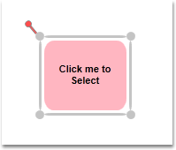
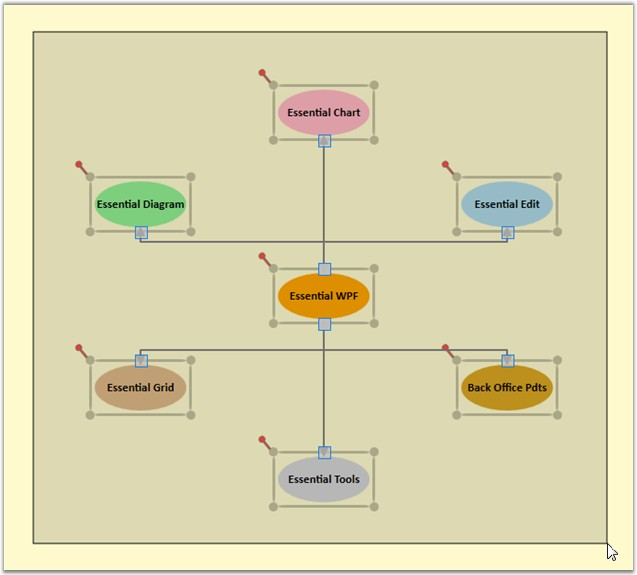

A selected node is indicated using a rectangular resizer over the node’s border. Many interactions using keyboard, mouse commands will affect the elements that is currently selected.
Table 26: Property Table
|
Property |
Description |
Type of the property |
Value it Accept |
Any other dependencies/ sub properties associated |
|
AllowSelect |
Gets or sets a value indicating whether node can be selected or not. The default value is set to True. |
Dependency property |
Boolean (true/ false) |
No |
|
IsSelected |
Gets or sets a value indicating whether this instance is selected. |
Dependency property |
Boolean (true/ false) |
No |
A node can be selected in two ways,
· At run time
· Through Code
Node can be selected at run time just by clicking on the node.

Figure 46: Node befor selecion

Figure 47: Node after selecion
The above two images differentiates the appearance of the node before and after selection.
Node can also be selected using the IsSelected property of the Node.
|
[C#]
n.Shape = Shapes.FlowChart_Card; n.IsSelected = true; diagramModel.Nodes.Add(n); |
|
[VB]
n.Shape = Shapes.FlowChart_Card n.IsSelected = True diagramModel.Nodes.Add(n) |
Node Multi-Selection
Multiple items on the drawing area can be selected.
Multiple selection can be performed by following the below mentioned steps.
· Items on the drawing area are selected only if they fall within the bounds of the drag adorner.
· The drag adorner is displayed when you click anywhere on the page and start dragging the pointer.
· The rectangle formed with the drag start-point as one of its points, and the point where the mouse button was released as its second point, defines the drag adorner's bounds.
· Nodes connected to one or more nodes are selected only if one of the connected nodes is also within the drag adorner bounds. The nodes and the connector connecting them act as a single selection.
 Note: Resizing or moving any one item affects the
other items by the same factor. However, rotating affects only the current
node.
Note: Resizing or moving any one item affects the
other items by the same factor. However, rotating affects only the current
node.
Items can be deselected by clicking on any part of the drawing area other than the selected items.

Figure 48: Multiple Selections
The AllowSelect property can be used to enable/disable
the node selection.
When this property is set to True, it is
possible to select the node. Otherwise the node cannot be selected.
The
default value is True.
The AllowSelect property can be set in the following way:
|
[C#]
nodeobject.AllowSelect = false; |
|
[VB]
nodeobject.AllowSelect = False |
Select Nodes and Connectors Refer Concepts and
Features -> General -> Select Nodes and Connectors